STextAreas
TextFields are good for representing a small amount of code, but often times you want an area with more than one line available. This is what the STextArea is for.
Copy the following class into your project. It is a simple layout that puts an STextArea
import sacco.gui.*;
public class AreaDemo implements ButtonListener
{
private SFrame frame;
private SButton button;
private STextArea area;
public AreaDemo()
{
frame = new SFrame();
frame.setLayout(new BorderLayout());
button = new SButton("Click");
button.addButtonListener(this);
frame.add(BorderLayout.SOUTH, button);
area = new STextArea();
frame.add(BorderLayout.CENTER, area);
//new code goes here
frame.pack();
}
public void onButtonPress(SButton source)
{
}
public void launch()
{
frame.setVisible(true);
}
public static void main()
{
AreaDemo a = new AreaDemo();
a.launch();
}
}
Running the program will get the following result:
That just looks like a text field. The problem is that we didn't decide on the size of the TextArea when we were constructing it, so frame.pack() put it at it's smallest size.
An STextField's size is created using a number of rows and columns. A row is just a line of text, while a column is less clear. Really you should guess and check the number of columns until you get what you want.
Change the line that constructs the STextField to say the following:
area = new STextArea(10,25);
This means that the STextArea will try to have 10 lines and 25 columns (whatever that is). Run it and you should get the following:
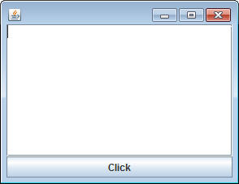
Now the pack method respects the size of the STextField.
Modifying the Text:
Just like a TextField, TextAreas have getText and setText methods. Go to the code where it says '//new code goes here' and add the following:
area.setText("Computer Science");
Run the program again and you should get the following:
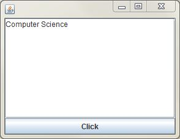
Other ways of putting text on the STextArea:
The setText method completely replaces the text that's there. Sometimes this is preferred, but sometimes you'd like to just add on to the end. There are two methods that will help us with this:
void append( String text )
void appendln( String text )
You can think of these as the print and println method of the STextArea object. They will add the given text onto the end of the existing text. If you want it to be followed by a line, use the appendln method.
Add the following line of code to the onButtonPress method:
area.append("Hello World!");
Now when you click the button, "Hello World!" will be added to the end of the current text.
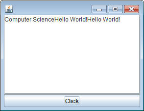
Keep pressing the button and you'll notice that scrollbars automatically appear.
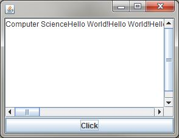
Sometimes this is helpful, but sometimes not. You can control if they appear or not using the following methods:
public void setHorizontalScroll(boolean b)
public void setVerticalScroll(boolean b)
By default they only appear when needed, but we can set them to always on or always off by passing a true or false into these methods.
Add the following to the '//new code goes here' location in the constructor:
area.setHorizontalScroll(false);
Now when you click the button many times, the scollbars will not appear:
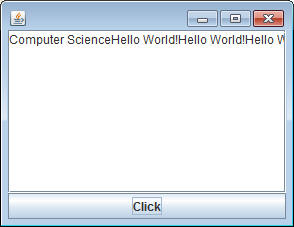
Often when there's a text field, the horizontal scroll is off but the text will automatically go on to the next line. This is known as wrapping the text onto the next line. By default it is off, but there is a method that will affect that as well. In that same location in the constructor, add the following:
area.setLineWrap(true);
Now when you click the button, the extra text appears on the next line
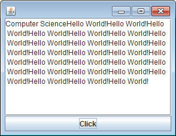
You may have noticed that there is a cursor that appears at the beginning of the STextArea. You can type in here freely. Sometimes this is a good idea, like whe you're using the text area for input, but sometimes it's not. Add the following to the constructor of the demo:
area.setEditable(false);
This will make it so that you are not allowed to type in the text area. It's just for displaying text.
Assignments:
1) InputLog:
Create the following GUI which includes an STextArea, STextField, SPanel and an SButton:
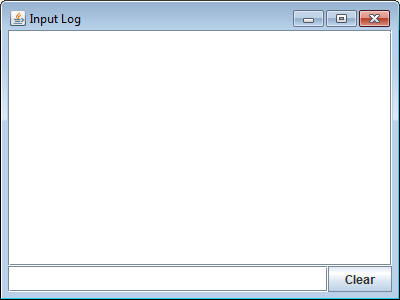
Make sure that the STextArea is not editable. The purpose of this is to keep track of the entered lines of text one at a time. The user will type in some text in the field below:
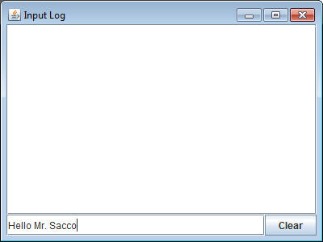
When the user hits the Enter key, the text from the field is added to the STextArea and the STextField is cleared:
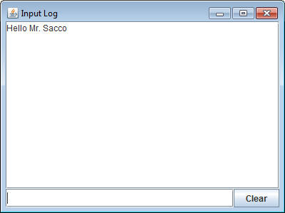
The user can enter as many messages as they want.
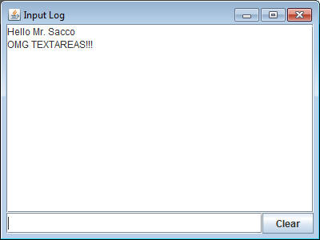
When the Clear button is pressed, the STextArea will be cleared.
2) RouletteDisplay:
In a Casino, the game of Roulette involves spinning a wheel and betting on what number a marble will land on. Casinos have discovered that when they display the numbers that have already landed, people will play more because they think that a certain number or color is "due". Mathematically this is stupid, but gambling isn't for those that know how probability works.
Create the following Roulette GUI:
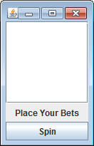
When the Spin button is pressed, simulate spinning the wheel by getting a random number from 1 to 34. That number should be displayed on the STextArea
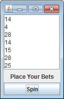
BUT WAIT: If we use the appendln method, the next number will be added to the END of the text area. In order to draw in the most suckers, we should make sure that the new number is added to the beginning of the TextArea. That will involve using the getText method, adding the new number to the beginning of that text, and then using the setText method to display that String.
In order for this to look good, you must do two things:
- Turn off vertical scrolling
- use a line such as area.setCaretPosition(0); Which will
set the position of the cursor to index 0 (the top). If we don't do this,
the bottom of the list will be shown, which is unacceptable and will not make us
any profits.
Adding the Colors:
Each number in Roulette has a color associated with it. For the sake of
this assignment, each number is either Red or Black. We’re going to modify the
RouletteDisplay class to tell us if the number is red or black along with the
number.
Create a method with the following header in the RouletteDisplay class:
public String getColor(int num)
The purpose of this method is to return a String “Red” or “Black” according to
the number that is passed into the parameter.
Start this method with the following two arrays that are lists of the black
numbers and the red numbers
int[] blackNums = {2,4,6,8,10,11,13,15,17,20,22,24,26,28,29,31,33};
int[] redNums = {1,3,5,7,9,12,14,16,18,19,21,23,25,27,30,32,34};
Strategy:
Start with a String variable that contains the String “ERROR”. Set up a loop
that will loop through the the blackNums array and check to see if the num
parameter matches any of the elements in the array. If it does, put the String
“Black” into the variable you created earlier. Yes
Repeat the process with the redNums array. After that’s finished, return the
String variable. Theoretically if the parameter num is from 1 to 34, either
“Red” or “Black” will be in that String. If something went wrong, “Error” will
still be there.
Using the getColor method
Now jump to the onButtonPress method, where you generate a number and then add
it to the String. Modify it so that it also passes that number into the getColor
method, and incorporated the resulting String into your setText so that it
displays the number, followed by its color.